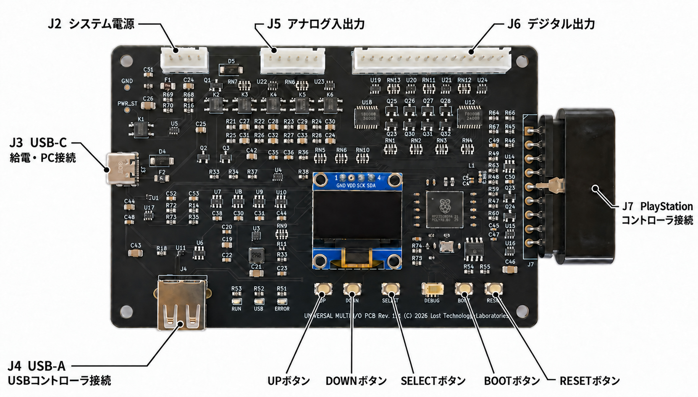

ユーザーズマニュアル
はじめに
第1.0版 作成日：2026-09-21
Universal Multi I/O 基板は、USB / PlayStation コントローラの入力をゲーム基板向けのデジタル16ch・アナログ4chへと変換するI/Oボードです。デジタル出力の一部をロータリーエンコーダ出力としても使用できます。
本基板は、PCとのUSB接続、ゲーム基板の電気的仕様、接続用ハーネス製作の知識などがある方の利用を想定しています。
主な機能
| 項目 | 内容 |
|---|---|
| コントローラ入力 | USB コントローラ、PlayStation 系コントローラ |
| デジタル出力 | 16ch、ボタン・方向・軸しきい値を割り当て可能 |
| アナログ出力 | 4ch、入力軸またはボタンによる値の増減 |
| ロータリーエンコーダ出力 | 最大3軸、デジタル出力のchペアを使用 |
| 設定 | 本体 OLED メニュー、USB-C 接続の Web 設定 |
| プロファイル数 | 8個（PROFILE0〜PROFILE7） |
USB デバイスモードでは、本基板を USB-C の接続先へ XInput または HID ゲームパッドとして接続できます。USB-A / PlayStation コントローラ接続端子（J7）に接続したコントローラの入力を中継し、プロファイルごとに専用の割り当てを設定できます。
必要なもの
接続するゲーム基板、その電気的条件に適合するハーネス、5V 電源（ゲーム基板と同じ供給源を想定）、コントローラを用意してください。Web 設定とファームウェア更新を行うには PC とデータ通信対応 USB-C ケーブルを使用します。
本書の構成
接続条件は「接続と電源」、起動時の操作は「基本操作」を参照してください。本体と Web 設定の操作方法はそれぞれの章に、設定値の説明・範囲・初期値は「設定項目」にまとめています。
接続と電源

各部と端子
| 端子・操作部 | 入出力 | 用途 |
|---|---|---|
| USB-A | 入力 | USB コントローラ接続 |
| USB-C | 入力、出力 | 単体給電、USBデバイスモード、Web 設定、ファームウェア更新 |
| J7 | 入力 | PlayStation コントローラ接続端子 |
| J2 / POWER | 入力 | システム電源端子（5V、GND） |
| J6 / DIGITAL OUT | 出力 | デジタル出力端子 16ch |
| J5 / ANALOG IN/OUT | 入力（電源のみ）、出力 | 外部リファレンス電圧（5V、GND）、アナログ出力4ch |
| UP / DOWN / SELECT | OLED メニュー操作 | |
| BOOT (SW1) | ファームウェア更新用の起動 | |
| RESET (SW2) | 本機の再起動 |
USB デバイスモードでは、USB-A / PlayStation コントローラ端子（J7）に接続したコントローラの入力を、USB-C に接続した PC やゲーム機へゲームパッド入力として送信します。
電源について
システム電源 と USB-C の両方に給電した場合は、システム電源が優先されます。USB コントローラへも給電する SELF TESTモードでは、USB-C に5V・1A以上の電源を使用してください。
| 給電・起動条件 | 動作 |
|---|---|
| システム電源あり・通常起動 | コントローラを認識すると通常運転 |
| USB-C のみ・ボタンを押さずに起動 | 保存した USB MODE に従う。OFF は SELF TESTモード、XINPUT / HID は USB デバイスモード |
| USB-C のみ・SELECT を押して起動 | CONFIG（Web 設定） |
| システム電源あり・SELECT を押して起動 | ERROR。CONFIG には移行しない |
USB-C のみで通常起動した際の動作は、保存した USB モードに従います。OFF の場合は SELF TESTモード、XINPUT / HID の場合は USB デバイスモードでの起動となります。UP ボタンを押して起動した場合 USB デバイスモード（XInput）、DOWN ボタンを押して起動した場合は USB デバイスモード（HID）で一時的に起動させることが可能です。システム電源を接続した場合は、これらの指定によらず通常モードでの起動となります。
USB デバイスモードでは デジタル出力端子（J6）/ アナログ出力端子（J5）でのアナログ・デジタル・ロータリーエンコーダ出力は行われません。USB-C 端子からの給電で使用してください。
デジタル出力端子の概要
デジタル出力端子（J6）のピン1〜16は ch0〜ch15 に対応します。デジタル出力端子（J6）には GND 端子はなく、リターンはシステム電源端子（J2）/アナログ端子（J5）を使用します。システム電源端子（J2）のピン1・2が +5V、ピン3・4が GND です。
通常のデジタル出力はアクティブ Low のシンク出力です。接続先のプルアップは +5V 系を対象とし、+12V 系へは接続できません。ご注意ください。
ch8/9・ch10/11・ch12/13・ch14/15 には切替式の1kΩプルアップがあり、ロータリーエンコーダ出力を有効にしたchペアに対して機能します。ロータリーエンコーダに割り当てたchペアは、通常のデジタル出力としては利用できません。
アナログ出力端子の概要
| J5 ピン | 信号 |
|---|---|
| 1 | 外部リファレンス電圧（VREF EXT） |
| 2 | GND |
| 3〜6 | アナログ ch0〜ch3 |
本基板のアナログ出力は、0〜選択されたリファレンス電圧（VREF）までの256段階となります。外部リファレンス電圧（VREF EXT）は+5V系を対象とし、接続先は5kΩ/10kΩ可変抵抗のワイパー入力相当を想定しています。アナログ出力のリファレンス電圧の選択は「設定項目」の VREF を参照してください。
USB-C 単体給電で動作している場合は、外部から外部リファレンス電圧（VREF EXT）を印加しても、アナログ出力は有効になりません。
基本操作
起動
基本的に、システム電源端子（J2）へ電源を接続して起動します（一部 USB-C コネクタに電源またはPCを接続してご利用可能な機能があります）。コントローラの接続待ち時は IDLE、有効なコントローラが接続され、認識が完了すると RUN USB または RUN PS という表記になります。USB コントローラと PS コントローラがともに接続され、いずれも有効な場合は USB コントローラが優先されます。同時に扱える入力機器は1台です。
SELECT ボタンでメニューを開き、MONITOR 画面で入力状態を確認できます。設定を終えたら EXIT で通常画面へ戻してください。
起動時のボタン
| 操作 | 動作 |
|---|---|
| ボタンなし | 保存された USB ホストモードで起動 |
| SELECT を押しながら起動 | Web による設定モード。USB-C 電源でのみ利用可能 |
| UP を押しながら起動 | USB デバイスモード（XInput） |
| DOWN を押しながら起動 | USB デバイスモード（HID） |
| SW1 を押しながら電源投入、または SW1 を押しながら SW2 でリセット | ROM USB ブート（UF2 更新） |
USB ホスト処理は、PIO モード/ NATIVE モードの2種類があり、設定画面で変更が可能です。PIO モードが初期値です。NATIVE モードは互換用のモードで、PIO モードで認識されないコントローラがあった場合にご利用ください。ただし、USB-C との利用が排他となるため、Web による設定中は USB-A に接続されたコントローラを使用できない他、USB デバイスモードで USB コントローラを使用することができません。
USB デバイスモード
USB-C 単体給電で起動し、入力に使うコントローラを USB-A または PlayStation コントローラ端子（J7）に接続してください。通常どの方式を採用するかは、本体設定メニュー SYSTEM → USB MODE、または Web 設定画面の「USB-C単体給電時」のモードにて選択してください。設定変更は次回起動に反映されます。
| USB MODE | 動作 | 接続先の確認記録 |
|---|---|---|
| OFF（初期値） | SELF TESTモード | — |
| XINPUT | Xbox 360 有線互換パッドとして中継 | Windows・macOS・Linux |
| HID | HID ゲームパッドとして中継 | PC・Switch・Switch 2 |
NATIVE ホストモードでは USB-A の入力を扱えないため、PlayStation コントローラ端子（J7）を使用してください。USB デバイスモードの割り当ては「設定項目」を参照してください。
モーター振動機能
XInput モードでは、接続先からの振動指示を入力に使用中のコントローラへのみ送信します。USB-A の Xbox 系・DualShock 3/4、PlayStation コントローラ端子（J7）の DualShock 2 での動作を確認しています。HID モードはモーターの振動機能は動作しません。また、ジョグコンでは振動機能は動作せず、FFB のみの動作となります。
PlayStation コントローラ端子（J7）に接続したコントローラのモーター機能は、USB-C 接続先が CC 信号で1.5A以上の供給能力を通知している場合にのみ有効になります。
状態表示
| 表示 | 意味 |
|---|---|
| IDLE | コントローラ接続待ち |
| RUN USB / RUN PS | 表示されたコントローラを使用中 |
| SELF TESTモード | 単体によるコントローラ入力の確認中。外部出力コネクタへは信号出力されません |
| CONFIG | Web による設定中。外部出力コネクタへは信号出力されません |
| ERROR | エラー停止中。原因は CAUSE または赤 LED で確認してください |
トップ画面には、システム電圧（J2 コネクタに接続されている電源電圧）ならびにアナログ出力信号用のリファレンス電圧（VREF）の状態も表示されます。OLED の SYS 5V は Web 設定画面での SYSTEM 5V と同じ電源を指します。
| 動作 | RUN 緑 | USB 黄 |
|---|---|---|
| RUN USB | 点灯 | 点灯 |
| RUN PS | 点灯 | 消灯 |
| IDLE | 速い点滅 | 消灯 |
| SELF TESTモード | 遅い点滅 | USB 認識時は遅い点滅 |
| CONFIG | 遅い点滅 | 消灯 |
| ERROR | 消灯 | 消灯 |
USB デバイスモードでは、STATE に XINPUT または HID と表示します。接続先との接続が確立するまでは後ろの * が点滅し、確立すると消えます。現行実装では、このモード中の RUN 緑・USB 黄は消灯します。
トップ画面の IN はボタンとハット方向、LXY / RXY はスティック値です。入力が選ばれていない場合や、そのスティックを持たない機器では ---- と表示します。相対入力のトラックボールなどでも、スティック欄の ---- は異常を意味しません。
初期割り当て
| 出力 | 初期割り当て |
|---|---|
| デジタル ch0・1・2・3 | ハット 上・下・左・右 |
| デジタル ch4〜7 | ボタン0〜3 |
| デジタル ch8 | ボタン8（SELECT/BACK系） |
| デジタル ch9 | ボタン9（START系） |
| デジタル ch10〜15 | 未割り当て・無効 |
| アナログ ch0〜3 | LX・LY・RX・RY、すべて有効 |
| ロータリーエンコーダ ROT0〜2 | すべて無効 |
ch番号・ボタン番号・プロファイル番号は0始まりです。
本体メニュー
共通操作
SELECT でメニューを開きます。UP/DOWN で項目や値を選び、SELECT で決定します。前ページへ戻るときは BACK、終了はトップメニューで EXIT を選んでください。
| メニュー | 内容 |
|---|---|
| PROFILE | 使用するプロファイル0〜7を選択 |
| SETTINGS → DIGITAL | デジタルch0〜15の割り当て・トグル、一括割り当て |
| SETTINGS → ANALOG | アナログch0(A0)〜ch3(A3)の設定 |
| SETTINGS → ROTARY | ROT0〜ROT2の設定 |
| SYSTEM → VREF | リファレンス電圧の選択 |
| SYSTEM → JOG FFB | ジョグコン設定 |
| SYSTEM → NETWORK | 現在のネットワーク設定表示・初期値へのリセット |
| SYSTEM → USB HOST | PIO/NATIVE の選択。次回起動に反映 |
| MONITOR | 入出力の観測 |
| INFORMATION | 機器・ファームウェア情報 |
| FACTORY RESET | 全設定を初期化して保存 |
設定操作中はすべての外部出力は開放されます。MONITOR ページでは通常運転中の出力情報を確認できます。
SYSTEM → USB MODE で、USB-C 単体給電時の動作を OFF / XINPUT / HID から選べます。初期値は OFF、保存後の次回起動で反映されます。USB デバイスモードのボタン・軸割り当ては Web 設定で編集します。
UP / DOWN ボタンは押し続けると連続操作になります。範囲の広い数値は押し続けた時間に応じて増減幅が大きくなり、離すと細かい操作に戻ります。SELECT ボタンは連続操作の対象外です。
コントローラ操作
メニューを開く操作は、本体の SELECT ボタンで行います。開いた後はハット上下、LX、LY（左＝上、右＝下）で移動できます。
| 入力系統 | 決定の初期値 | 戻るの初期値 |
|---|---|---|
| USB（標準） | ボタン0 | ボタン1 |
| PS 配列 | ボタン1（×） | ボタン2（○） |
操作ボタン番号は設定ファイルの system.ui で変更できます（0〜31、決定と戻るは別番号）。MONITOR と割り当ての入力待ち中はコントローラによるメニュー操作を受け付けません。
デジタル出力の割り当て
SETTINGS → DIGITAL → 対象chを選択して設定します。
| 項目 | 操作 |
|---|---|
| ASSIGN | キーの入力待ちに入り、操作されたボタン・方向・軸を割り当てます |
| SELECT | 入力元と入力項目を一覧から選びます |
| NONE | 割り当てを解除します |
| DEFAULT | 対象chを初期割り当てに戻します |
| TOGGLE | トグルの無効/初期 Low/初期 High を設定します |
| ASSIGN ALL | すべてのchの割り当てを順に設定します。中断時は画面の選択肢にて続行・終了を選んでください |
ASSIGN は静止位置からの変化を取得します。割り当てのための入力待ちに入る前にボタンなどから手を離してください。
保存と初期化
SETTINGS/SYSTEM で変更し BACK を選ぶと保存（SAVE?）するか表示されます。YES で保存、NO で保存済み設定を読み直して変更を破棄します。保存後、OLED 画面右下に SAVE と一瞬表示されるか確認してください。保存または読み直しに失敗すると、ERROR と表示されます。
PROFILE の選択と FACTORY RESET は実行後、ただちに保存されます。トップメニューへ戻る（EXIT）際には保存されません。FACTORY RESET は INIT ALL? で YES を選ぶと全設定を初期化します。初期化を実行すると、これまでに行ったすべての設定内容が失われますので、ご注意ください。
保存を伴う操作後は、開いていたメニューを閉じてトップ画面へ戻ります。対象は PROFILE の変更確定、SAVE? の YES、FACTORY RESET の YES、NETWORK の RESET です。保存結果は最下段に2秒間表示します。INITIALIZED は全設定の初期化、NET RESET はネットワーク設定のリセットを示します。SAVE? の NO や、値を変えずに PROFILE を確定した場合はメニューに残ります。
MONITOR 画面と INFORMATION 画面
MONITOR 画面は DIGITAL、ANALOG、ROTARY、JOGCON、AXES、USB の各情報を確認することができます。本体の UP/DOWN ボタンでページ送り、SELECT ボタンでメニューに戻ります。DIGITAL はボタン・出力、AXES は軸値、ROTARY は計算値と駆動状態、USB は認識機器の確認に使用します。
SELF TESTモード中の計算値表示は各端子からの出力ではありません。
INFORMATION 画面ではファームウェア情報を確認できます。
Web 設定
CONFIG モード
システム電源端子を外し、SELECT を押しながら USB-C ケーブルにて PC へ接続すると CONFIG モードで起動します。
OLED に表示された IP アドレスへ、ウェブブラウザを用いて HTTP にてアクセスしてください。初期アドレスは http://192.168.7.1/ です。
| 確認済み環境 | 記録 |
|---|---|
| OS | Windows、macOS |
| ブラウザ | Microsoft Edge、Google Chrome、Safari など |
画面と操作
ホーム画面にはシステム状態、コントローラ、プロファイルが表示されます。
編集したい項目を選び、値などを変更後、適用してホームへ戻ります。最後にツールバーの保存を実行してください。
| 操作 | 結果 |
|---|---|
| 適用 | 編集内容を画面上で確定します。本基板への保存は行いません |
| キャンセル | 編集画面の変更を取り消します |
| 保存 | 本基板へ書き込み、設定を保存します |
| 読込 | 本基板の保存済み設定を読み込みます |
| 状態表示 | 入力・電源などを表示します |
未保存の変更がある場合は、保存ボタンとその旨の注意文が表示されます。値などを変更し、適用しただけでは電源を切った後に設定は残りませんので、ご注意ください。
設定ファイル
ファイル書き出しで本基板内の設定情報をファイルに保存できます。取り込みは、以前に保存された設定ファイルを読み込み、内容を確認してから本基板へ設定内容を保存します。読込やファイル取り込みの際、未保存の変更がある場合は、破棄するかどうかの確認表示が行われます。
書き出しファイル名は universal-multi-io-settings-YYYYMMDDhhmmss.json です（YYYYMMDDは年月日、hhmmssは時間です）。書き出したファイルを編集すると読み込みできなくなる可能性があります。基本的には触らないでください。再読み込み時に、ファイル内容にエラーがあった場合は取り込むことができません。ご了承ください。
工場出荷設定
工場出荷設定を読み込んだ後、保存を実行すると本基板へ設定を保存します。これまでに設定した内容はすべて失われます。くれぐれもご注意ください。
ネットワーク設定
| 項目 | 範囲・条件 | 初期値 |
|---|---|---|
| IP | プライベート IPv4 またはリンクローカル。/30 の有効ホストアドレス | 192.168.7.1 |
| マスク | /30 固定 | 255.255.255.252 |
保存後に再起動することで、変更したアドレス設定が反映されます。IP アドレスを初期設定に戻す場合は、本体メニューの SYSTEM → NETWORK → RESET を実行してください。
USB ホスト機能設定
USB ホスト機能を PIO モードと NATIVE モードの2種類から選択できます。PIOモード が初期値です。NATIVE モードは互換用のモードで、PIO モードで認識されないコントローラがあった場合にご利用ください。設定変更後、次回の起動時から反映されます。なお、NATIVE モードでは CONFIG 中の USB コントローラ入力が使用できません。また、USB デバイスモードで USB コントローラを使用することができません。
USB デバイスモードの設定
ホームの「USB-C単体給電時」で OFF / XInput / HID を選び、保存してください。次回の USB-C 単体給電での起動から反映されます。
プロファイル編集の「USBデバイスモードの割当（XInput / HID）」では、送信するボタン・トリガー・スティックの入力元と軸反転を設定できます。変更後は適用してホームへ戻り、保存してください。これらの割り当ては XInput / HID で共用となります。
相対軸の状態表示
状態表示の軸一覧に REL X（相対）、REL Y（相対）、REL W（ホイール） を表示します。これらは位置ではなく、入力報告ごとの変化量です。
ロータリー出力の反転設定
プロファイルのロータリー編集で「反転（INVERT）」を変更できます。対象は ANALOG / JOG / TRACKBALL / WHEEL です。DIGITAL では表示されません。変更後は適用してホームへ戻り、保存してください。
設定項目
プロファイル
PROFILE0〜PROFILE7 の8個を保持しています。本体トップメニューの PROFILE を選択し、SELECT ボタンで確定すると、プロファイルが変更・保存されます。Web 設定では使用したいプロファイルを選び、保存してください。
プロファイル毎に、デジタル・アナログ・ロータリーエンコーダの各種設定を保存できます。リファレンス電圧設定（VREF）・ジョグコン設定・ネットワーク設定・USB設定、メニュー操作ボタンの設定は、すべてのプロファイル共通です。プロファイル名は UTF-8 で1〜31バイト以内で設定可能です（Web 設定画面のみ）。
デジタル出力
初期割り当ては「基本操作」を参照してください。以下の軸しきい値の初期値は、Web 設定画面で軸入力を選ぶ際の設定値です。出荷時には軸しきい値の割り当てはありません。
| 項目 | 説明 | 範囲・選択肢 | 初期値 |
|---|---|---|---|
| 有効 | 対象chの使用 | OFF / ON | ch0〜9 ON、ch10〜15 OFF |
| 入力元 | 出力の入力条件 | なし/ボタン/ハット/軸しきい値 | ch別の初期割り当て |
| ボタン | 使用する入力番号 | 0〜31 | ch4〜7＝0〜3、ch8＝8、ch9＝9 |
| ハット | 使用する方向 | 上/下/左/右 | ch0〜3＝上/下/左/右 |
| 軸 | しきい値判定する軸 | 0〜7 | LX（0） |
| 判定方向 | ON側の方向 | 以上でON/以下でON | 以上でON |
| ON | ONになるしきい値 | −32768〜32767 | Web補完値16000 |
| OFF | OFFへ戻るしきい値 | −32768〜32767 | Web補完値8000 |
| トグル | 入力のたびに出力状態を切り替える | OFF/初期Low/初期High | OFF |
しきい値は「以上でON」では ON > OFF、「以下でON」では ON < OFF である必要があります。ロータリーエンコーダ出力を有効にした場合、割り当てられたchは通常デジタル出力に割り当てることはできません。
アナログ出力
| 項目 | 説明 | 範囲・選択肢 | 初期値 |
|---|---|---|---|
| 有効 | 対象chの使用 | OFF / ON | 全ch ON |
| SOURCE | 駆動源 | 軸/ボタン | 軸 |
| AXIS | 入力軸 | 0〜7 | A0＝LX、A1＝LY、A2＝RX、A3＝RY |
| INVERT | 出力反転 | OFF / ON | OFF |
| RANGE | 中心を維持した振れ幅 | 50〜100%、画面では5%刻み | 100% |
| カーブ | 変換特性 | 0（直線）のみ | 0 |
ボタンによるアナログ値の増減
SOURCE がボタンの場合の項目です。「ランプ」は値を徐々に変化させる動作を指します。
| 項目 | 説明 | 範囲・選択肢 | 初期値 |
|---|---|---|---|
| UP | 値を増加させる入力 | ボタン0〜31/ハット4方向/未設定 | 未設定 |
| DOWN | 値を減少させる入力。未設定なら1ボタン動作 | ボタン0〜31/ハット4方向/未設定 | 未設定 |
| SPEED | 値の変化速度の段階 | 1〜5 | 3 |
| RELEASE | 入力を離したときの動作 | CENTER（中心）/HOLD（保持）/ZERO（0） | CENTER |
有効にするには UP の設定が必要です。INVERT・RANGE は軸入力と共通です。
ロータリーエンコーダ出力
ROT0〜ROT2 の3軸を設定できます。cps は出力のサイクル数/秒です。設定上限は、接続先で正常に受け取れる速度の保証値ではありません。
| 項目 | 説明 | 範囲・選択肢 | 初期値 |
|---|---|---|---|
| ENABLE | 軸の使用 | OFF / ON | 全軸 OFF |
| CH | A相・B相の出力ペア | 8/9、10/11、12/13、14/15 | ROT0＝10/11、ROT1＝12/13、ROT2＝14/15 |
| MODE | 入力方式 | DIGITAL/ANALOG/JOG/TRACKBALL/WHEEL | JOG |
| INVERT | 回転方向を反転 | OFF / ON | OFF |
| CW・CCW | DIGITAL の時計回り・反時計回り入力 | ボタン0〜31/ハット4方向 | WebでDIGITAL選択時：0/1 |
| 速度cps | DIGITAL の定速出力 | 1〜65535 | WebでDIGITAL選択時：60 |
| AXIS | ANALOG の入力軸 | 0〜7 | LX（0） |
| AXIS | TRACKBALL の相対入力軸 | X / Y | X |
| DEADZONE | ANALOG の中心付近の不感帯 | 0〜32767 | 0 |
| MAX CPS | ANALOG の最大速度、JOG・TRACKBALL・WHEEL の出力速度上限 | 1〜65535 | 300 |
| SPEED/スケール | JOG の出力サイクル数/ダイヤル1回転 | 1〜65535 | 16 |
| SPEED/スケール | TRACKBALL・WHEEL の出力サイクル数/入力カウント | 1〜65535 | 16 |
TRACKBALL は相対 X/Y、WHEEL は相対ホイール入力を使用します。OLED は TRACKBALL を TRKBALL と表記しています。chペアは他の有効ロータリーエンコーダ軸・通常デジタル出力と重複できません。
ロータリー出力では、ANALOG の縦軸（LY / RY）、TRACKBALL の Y、WHEEL の入力方向をファームウェア側で補正します。INVERT は、その補正後の回転方向を反転する設定です。初期値は OFF で、接続先や好みに合わせて逆向きにする場合に ON にしてください。DIGITAL では INVERT は作用せず、CW / CCW に割り当てた入力で回転方向が決まります。
ジョグコン
| 項目 | 説明 | 範囲・選択肢 | 初期値 |
|---|---|---|---|
| ENABLE | FFB の使用 | OFF / ON | ON |
| STRENGTH | バネの最大強度 | 1〜15 | 8 |
| DEADBAND | 中心付近の遊び | 0〜RANGE未満、カウント単位 | 8 |
| RANGE | フル舵角。軸値の正規化にも使用 | 16〜32767カウント | 120 |
VREF
| 項目 | 説明 | 範囲・選択肢 | 初期値 |
|---|---|---|---|
| VREF | アナログ出力のリファレンス電圧を選択 | AUTO/SYSTEM 5V/EXTERNAL | AUTO |
AUTO の場合、アナログ端子（J5）の外部リファレンス電圧があればそちらを、なければ電源コネクタ（J2）に印加されたシステム電圧を利用します。SYSTEM 5V は電源コネクタ（J2）のシステム電圧、EXTERNAL はアナログ端子（J5）の外部リファレンス電圧を指します。OLED ではそれぞれ SYS 5V、EXT と表示しています。
外部リファレンス電圧は、本基板の監視で正常範囲と判定された場合に使用します。現行の判定範囲は4.70〜5.40V、起動時および範囲外から復帰するときの判定範囲は4.80〜5.30Vです（本基板の測定値に基づく判定）。AUTO で範囲外になった場合はシステム電圧へ切り替えます。EXTERNAL ではアナログ出力だけを開放し、正常範囲に戻ると自動復帰します。デジタル出力は継続します。
USB デバイスモード
| 項目 | 説明 | 範囲・選択肢 | 初期値 |
|---|---|---|---|
| USB MODE | USB-C 単体給電時の動作。全プロファイル共通 | OFF / XINPUT / HID | OFF |
USB デバイスモードの割り当て
プロファイルごとに保持する、USB-C へ送るゲームパッド入力用の割り当てです。デジタル出力（J6） / アナログ出力（J5） の出力割り当てとは別に、Web 設定から編集します。表の出力名は XInput 表記で、HID と共用します。
| 出力項目 | 入力元の範囲・選択肢 | 初期値 |
|---|---|---|
| A / B / X / Y | 未設定／ボタン0〜31／ハット4方向 | ボタン0 / 1 / 2 / 3 |
| LB / RB | 同上 | ボタン4 / 5 |
| BACK / START / GUIDE | 同上 | ボタン8 / 9 / 12 |
| L3 / R3 | 同上 | ボタン10 / 11 |
| 十字キー 上 / 下 / 左 / 右 | 同上 | ハット 上 / 下 / 左 / 右 |
| LT / RT | 未設定／軸0〜7 | 軸4 / 5 |
| 左スティック X / Y | 未設定／軸0〜7 | 軸0 / 1 |
| 右スティック X / Y | 未設定／軸0〜7 | 軸2 / 3 |
| 軸反転 | トリガー・スティックごとに設定 | OFF |
軸反転の選択肢は OFF / ON です。XInput と HID の上下方向の規格差は本機が処理するため、そのための反転設定は不要です。HID の ZL / ZR は LT / RT の値をしきい値でボタン入力に変換します。
初期割り当てでの顔ボタンの対応は次のとおりです。
| 入力機器 | XInput 出力 | HID 出力 |
|---|---|---|
| Xbox 系 | A→A、B→B、X→X、Y→Y | A→A、B→B、X→X、Y→Y |
| PS 系 | ×→A、○→B、□→X、△→Y | ×→B、○→A、□→Y、△→X |
USB デバイスモードの割り当ては、J5 / J6 用のトグル・ボタンによるアナログ値の増減・ロータリー変換を経由しません。
コントローラ
接続確認済み機器
既存の実機・評価治具での確認記録です。認識の確認と出力機能の確認は区別しています。
| 機器 | 接続 | 確認した内容 |
|---|---|---|
| DualShock 系 | J7 | PS 通信で認識 |
| DualShock 2 系 | J7 | PS 通信で認識 |
| ジョグコン | J7 | Web から FFB 設定操作 |
| ネジコン | J7 | ひねり・アナログボタン・ハット・ボタン認識 |
| SCPH-1010 | J7 | ボタン・ハット認識 |
| Xbox 360 有線 | USB | XInput 認識 |
| Xbox 360 無線 | USB 無線アダプタ経由 | XInput 認識 |
| Xbox 360 ワイヤレススピードホイール | USB 無線アダプタ経由 | ステアリング・トリガー・ハット・ボタン認識 |
| Sony DualShock 3 / SIXAXIS | USB | HID 認識 |
| Sony DualShock 4 | USB | 認識、従来基板でアナログ4ch出力 |
| HORI HORIPAD | USB | HID 認識 |
| HORI フライトスティック PS4-094 | USB、PS4モード | 認識 |
| Razer 製 PS4 コントローラ（1532:0401） | USB | HID 認識 |
| サイバースティック XE1AJ-USB | USB | スティック・スロットル・ボタン認識 |
| TAITO EGRET II mini トラックボール／パドル | USB | ボタン・相対X/Y・ホイール認識 |
Microsoft マウス（VID:PID 045E:0823）は、USB 直結でボタン5個・相対 X/Y・ホイールの入力が確認されています。相対軸はロータリーエンコーダ出力の入力元として使用できます。USB ハブはサポート対象外です。
ボタン番号
| 番号 | PS系 | XInput |
|---|---|---|
| 0 | □ | A |
| 1 | × | B |
| 2 | ○ | X |
| 3 | △ | Y |
| 4 | L1 | LB |
| 5 | R1 | RB |
| 6 | L2 | —（LTは軸） |
| 7 | R2 | —（RTは軸） |
| 8 | SELECT / Share | BACK |
| 9 | START / Options | START |
| 10 | L3 | L3 |
| 11 | R3 | R3 |
| 12 | PS | GUIDE |
| 13 | Touchpad（DS4） | — |
汎用 HID は機器の配列によります。MONITOR 画面で番号を確認するか、ASSIGN で実際の入力を取得してください。
軸番号
| 番号 | 表示 |
|---|---|
| 0 | LX（ひねり／舵角） |
| 1 | LY |
| 2 | RX |
| 3 | RY |
| 4 | L2 / LT |
| 5 | R2 / RT |
| 6 | Slider |
| 7 | Dial |
相対入力の X/Y と絶対軸 LX/LY は別の入力です。
ファームウェア更新
更新前
INFORMATION 画面にてファームウェア情報を確認してください。設定のバックアップが必要な場合は、Web 設定からファイルへ保存しておいてください。ファームウェア更新によって保存形式が変更となる場合、設定が初期化されることがあります。
UF2 の書き込み
- J2 コネクタに接続したシステム電源を外します。
- BOOT（SW1）を押しながら USB-C から給電するか、USB-C 接続状態で BOOT (SW1) を押しながら RESET（SW2）を押してください。
- ROM USB ブートのストレージが認識されたら、本ボード向けとして配布されているファームウェアファイル（UF2 ファイル）をコピーしてください。
- 再起動後に INFORMATION 画面のファームウェア情報と設定内容を確認してください。
困ったときは
症状別の確認
| 症状 | 確認・対処 |
|---|---|
| 入力を認識しない | MONITOR → USB/DIGITAL/AXES で認識と入力値を確認してください |
| デジタル・アナログが出ない | STATE が RUN USB/RUN PS か確認してください。SELF TESTモード/CONFIG モードでは出力されません |
| ロータリーエンコーダ出力が OFF | 対象軸の有効化、RUN 状態、出力ch重複、設定メニューを閉じたか確認してください |
| アナログが出ない | システム電圧、リファレンス電圧（VREF）、対象chの有効化・入力元を確認してください |
| SELECT 起動で ERROR | システム電源端子（J2）を外して CONFIG を起動してください |
| 設定が残らない | OLED の SAVE または Web 設定の保存結果を確認してください。Web 設定画面では値を変更しただけでは適用されません。かならず保存操作を行ってください |
| ファイルを取り込めない | 本機の書き出し形式・設定範囲・ch重複などがないか確認してください |
| Web 設定が開かない | CONFIG 表示と OLED の IP アドレスを確認してください |
ERROR 赤 LED
| 表示 | 原因 |
|---|---|
| 点灯 | I2C エキスパンダへの通信失敗 |
| 1回点滅 | USB ホスト過電流 |
| 3回点滅 | エキスパンダ読み戻し値の不一致 |
| 遅い点滅 | システム電源端子から電源が供給されている状態で CONFIG 起動を要求した |
エラーの場合は、上記表の通り点滅と休止を繰り返します。OLED が表示されている場合は CAUSE も確認してください。原因を取り除いて RESETボタン（SW2）を押して再起動してください。
現行版では、リファレンス電圧がない、または正常動作の範囲外の場合、エラーとして扱わずに、アナログ出力のみを開放してデジタル出力は継続します。外部リファレンス電圧設定が AUTO の場合、外部電圧が範囲外になるとシステム電圧へ切り替えます。EXTERNAL の場合、外部電圧が正常範囲に戻ると自動復帰します。
USB デバイスモードでの確認
| 症状 | 確認・対処 |
|---|---|
| PC・ゲーム機がパッドとして認識しない | STATE が XINPUT / HID か、接続未確立の * が点滅していないか確認してください |
| USB-A の入力が届かない | USB ホスト設定が PIO か確認してください。NATIVE では J7 の入力だけを使用できます |
| ゲーム基板へ出力されない | USB デバイスモードは J5 / J6 へ出力しません。ゲーム基板向け出力はシステム電源で通常起動してください |
| 振動しない | 振動中継は XInput モードの対応機器のみです。J7 は USB-C の供給能力の通知条件も確認してください |
| USB ハブ経由で入力できない | USB ハブはサポート対象外です。USB-A に直結してください |
SELF TESTモード
USB MODE 設定を OFF に保存し、UP / DOWN / SELECT ボタンを押さずに USB-C 接続のみで起動すると SELF TESTモードになります。MONITOR ページでコントローラのボタン・軸・相対値などを確認できます。デジタルならびにアナログの外部出力はすべて開放されるため、ゲーム基板へ信号は出力されません。ご注意ください。
USB-C 接続のときに SELF TESTモードへするには、USB MODE 設定を OFF に保存し、UP / DOWN / SELECT ボタンを押さずに起動してください。保存値が XInput / HID の場合は USB デバイスモードで起動します。
PlayStation コントローラのモード切り替え
PlayStation コントローラ端子（J7）に接続した DualShock 2 の ANALOG ボタン、ジョグコンの MODE ボタンは、本基板の接続中にはモードを切り替えません。アナログ／ジョグモードに固定される仕様です。